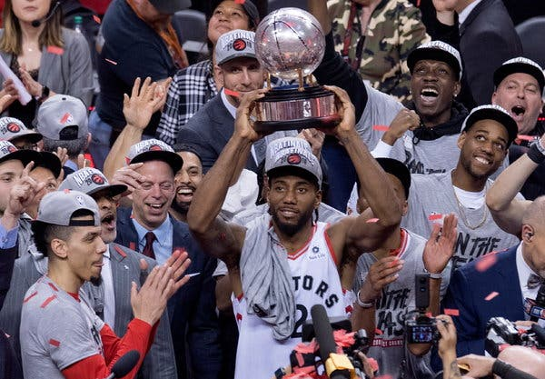

Report: Veteran Tyson Chandler to sign with Rockets
Tyson Chandler averaged 3.1 points and 5.6 rebounds last season with the Lakers and Suns.
The Houston Rockets aren't done making moves this summer.
On the heels of the reported blockbuster acquisition of Russell Westbrook, the Rockets reportedly also agreed to a one-year deal with free agent center Tyson Chandler, according to ESPN's Adrian Wojnarowski.
Free agent center Tyson Chandler has agreed to a one-year deal with Rockets, agent Jeff Schwartz of @excelsm tells ESPN.
Chandler finished the 2018-19 season with the Lakers, who he signed with after agreeing to a buyout with the Suns. He won a championship ring with Dallas in 2011, and he was the NBA’s defensive player of the year with New York in 2012 before earning an All-Star selection in 2013.
Russell Westbrook, Heat Have Mutual Interest

Russell Westbrook and the Miami Heat have mutual interest in a trade with the Oklahoma City Thunder.
Westbrook and the Thunder will work together on finding a trade scenario that benefits both parties. Westbrook would like to play for a team pursuing contention.
With the Thunder trading away Paul George to the Los Angeles Clippers, they appear to be on the verge of a rebuild.
Westbrook and the Thunder signed a five-year, $205 million extension in September of 2017. Westbrook has four seasons and $170 million remaining on his trade.
Miami traded for Jimmy Butler this offseason.
NBA referee Jason Phillips named to lead NBA Replay Center
NEW YORK -- The NBA announced today that Jason Phillips, a top-rated referee with 19 seasons of officiating experience in the league, has been named Replay Center Operations Principal.
In his new role, Phillips will be responsible for the day-to-day operations of the NBA Replay Center in Secaucus, N.J. His Referee Operations duties will include creating training videos and interpreting the rules of the game for officials, teams, broadcasters and media.
“We are excited to add an experienced and highly-respected official in Jason to our operations staff,” said NBA President, League Operations Byron Spruell. “We look forward to the continued success of the Replay Center under his leadership.”
Phillips will be assisted in the Replay Center by Senior Lead Pete Williams, who has been a member of the Replay Center staff since September 2014. In addition to game oversight, Williams creates training curricula, establishes protocol and assigns nightly responsibilities for all Replay Center personnel.
Phillips will succeed Senior Vice President, Replay and Referee Operations Joe Borgia, who has served the NBA for 30 years as a game official and a basketball and referee operations executive. Borgia was instrumental in the creation, design and implementation of the NBA’s state-of-the-art Replay Center.
Borgia will refocus his efforts and role with the NBA on the newly-created and recently-approved Coach’s Challenge. As he did with the Replay Center, Borgia will develop the rules and handle the execution of this important initiative.
“Joe’s background, knowledge and experience make him a natural fit to lead the introduction and application of the Coach’s Challenge,” said Spruell. “After years of having Joe oversee the Replay Center nightly, we’re grateful that he will continue serving the NBA in such a pivotal role.”
Phillips, 49, has officiated more than 1,100 regular-season games since joining the NBA for the 2000-01 season. He has also worked 94 NBA playoff games, including nine games in The Finals. He finished his on-court career officiating Games 1 and 5 of the 2019 NBA Finals.
“After 19 years of experiencing NBA excitement on the court with the best officials in the world, I look forward to the new challenge of heading up the NBA Replay Center and working alongside the great people who help support our game on a daily basis,” said Phillips.
A native of Cisco, Texas, Phillips earned a bachelor’s degree in Business Administration at Tarleton State University.
Kristaps Porzingis officially re-signs with Mavericks
DALLAS -- The Dallas Mavericks announced today that they have re-signed forward/center Kristaps Porzingis. Per team policy, terms of the deal were not disclosed.
Porzingis (7-3, 240) was originally acquired by the Mavericks on January 31, 2019 along with guards Tim Hardaway Jr., Courtney Lee and Trey Burke, in exchange for guard Dennis Smith Jr., center DeAndre Jordan, guard/forward Wesley Matthews and two future first-round draft picks.
He holds career averages of 17.8 points, 7.1 rebounds, 2.0 blocks and 31.0 minutes per game in 186 games (185 starts). He averaged a career-high 22.7 points, 6.6 rebounds and a career-high 2.4 blocks in 48 games (all starts) for the Knicks during the 2017-18 season en route to being named a 2018 NBA All-Star. Porzingis suffered a torn left ACL against Milwaukee on Feb. 6, 2018, ending his 2017-18 campaign and he has not seen game action since the injury.
The former fourth overall pick in the 2015 NBA Draft appeared in 72 games (all starts) for the Knicks as a rookie in 2015-16, averaging 14.3 points, a career-high 7.3 rebounds and 1.9 blocks in 28.4 minutes on his way to being named to the 2016 NBA All-Rookie First Team.
A native of Liepaja, Latvia, Porzingis began his professional career with Spain’s Cajasol Seville. He was a two-time recipient of the ACB All-Young Players Team (2014, 2015) and was also named a EuroCup Rising Star in 2015.
Report: Lakers plan to start LeBron James at point guard this season

The Los Angeles Lakers intend to start four-time MVP LeBron James at point guard this season, according to a report from Chris Haynes of Yahoo Sports.
The 6-foot-8 forward reportedly will start alongside newly-signed veteran guard Danny Green in the Lakers' new-look backcourt.
LeBron is no stranger to the point guard position. He has routinely filled the role as point-forward over his 16-year career. But this would be the first time a squad has planned to start him at point guard on opening night.
He ranks 10th on the NBA's all-time assists list (8,662) and is within striking distance of passing a pair of Hall of Famers in 2019-20: Gary Payton (whom he trails by 305 assists) and Isiah Thomas (400).
The Lakers have been busy this offseason adding talent to surround LeBron, who played a career-low 55 games last season and didn't reach The Finals for the first time since 2011. According to Haynes, the 34-year-old is in "great shape with no restrictions".
Grizzlies re-sign Jonas Valanciunas to multi-year contract
The Memphis Grizzlies announced today that the team has re-signed center Jonas Valanciunas to a multi-year contract.
Valanciunas (7-0, 265) appeared in 19 games (17 starts) for Memphis last season and averaged 19.9 points, 10.7 rebounds, 2.2 assists and 1.58 blocks in 27.7 minutes after he was acquired by the Grizzlies from the Toronto Raptors on Feb. 7. Overall, he finished the 2018-19 campaign with averages of a career-high 15.6 points, 8.6 rebounds, 1.4 assists and 1.08 blocks in 22.3 minutes in 49 games (27 starts) with the Raptors and Grizzlies.
Originally selected with the fifth overall pick in the 2011 NBA Draft, the 27-year-old holds career averages of 12.1 points, 8.5 rebounds and 1.04 blocks in 25.2 minutes while shooting 55.8 percent from the field over seven NBA seasons with the Raptors and Grizzlies. He owns postseason averages of 12.7 points, 9.4 rebounds and 1.00 blocks in 25.5 minutes in 43 games (36 starts) with the Raptors.
A native of Utena, Lithuania, Valanciunas was named the 2011-12 Lithuanian Basketball League (LKL) Most Valuable Player before joining the NBA. He was selected to the 2012-13 NBA All-Rookie Second Team as a member of the Raptors.
Fans who want to support the Memphis Grizzlies and purchase tickets to the Grizzlies’ remaining contests may do so now by calling (901) 888-HOOP or going online to grizzlies.com. Single Game Tickets are available for purchase at the FedExForum Box Office, ticketmaster.com, online at grizzlies.com or by calling 1-800-4NBA-TIX.
The Toronto Raptors Win Canada's First NBA Championship
The Toronto Raptors became the 2019 NBA champions Thursday, and they are the first team outside the US to do it.
Game 6 of the NBA Finals was tight, going back and forth between the Raptors and the Golden State Warriors. But the Raptors took the game in the end with a 114-110 for a 4-2 series victory.
The match ended the 2019 championship series and was a first-time win for the Raptors, who made their NBA Finals debut in their 24th season.
Kawhi Leonard, the All-Star forward Toronto acquired last summer from San Antonio, was named Finals MVP for the second time. Leonard is the third player to win the award with more than one franchise, along with Kareem Abdul-Jabbar and LeBron James.
Raptors point-guard Kyle Lowry and forward Pascal Siakam put up spectacular performances as well, each with 26 points.
Reports: Marcus Morris spurning Spurs for deal with Knicks
According to multiple reports, an offer by the San Antonio Spurs to free-agent forward Marcus Morris has been pulled, leaving the eight-year veteran to sign a one-year, $15-million deal with the New York Knicks. The Spurs will reportedly opt instead for free-agent forward Trey Lyles.
Though it was originally reported that Morris intended to sign with the Spurs shortly after the business moratorium lifted on Saturday, word about a 'reconsideration' began bubbling on Tuesday. Charania reported that, despite the turn of events, Morris hopes for a clean break with San Antonio:
Morris spent last the past two seasons with the Boston Celtics, serving as a standout reserve for them. In the 2018-19 season, Morris averaged 13.9 points, 6.1 rebounds and 1.5 assists per game.
The 23-year-old Lyles is said to be set for a two-year deal with the Spurs, after spending the past two years as a member of the Denver Nuggets. He was originally drafted No. 12 overall (2012) by the Utah Jazz, and averaged 8.5 points and 3.8 rebounds in 17.5 minutes last season.